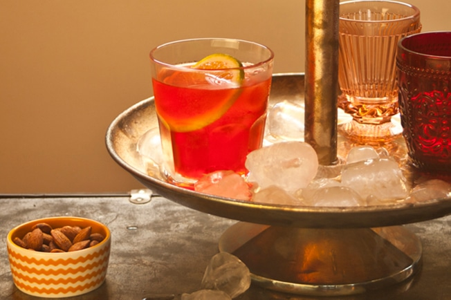

Negroni

Descrição
O Negroni é um drinque italiano bem classudo, ótimo para ser
servido como aperitivo. E o melhor de tudo é que é super fácil de
preparar e delicioso. Tintin!
Ingredientes
- 1 dose de gim
- 1 dose de Campari
- 1 dose de vermute tinto
- 1 rodela de laranja
- cubos de gelo a gosto
Modo de preparo
- Num copo americano baixo, coloque a rodela de laranja e
adicione bastante gelo. Junte o gim, o Campari e o vermute
tinto.
- Com uma colher bailarina, misture agitando o líquido de cima
para baixo. Sirva a seguir.